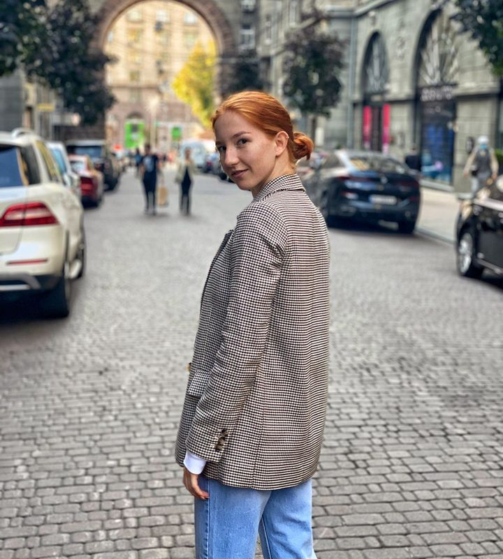
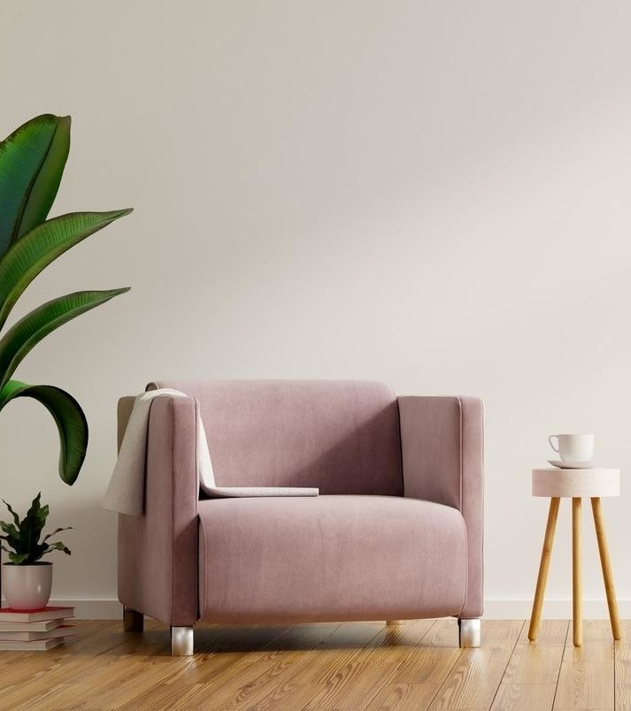
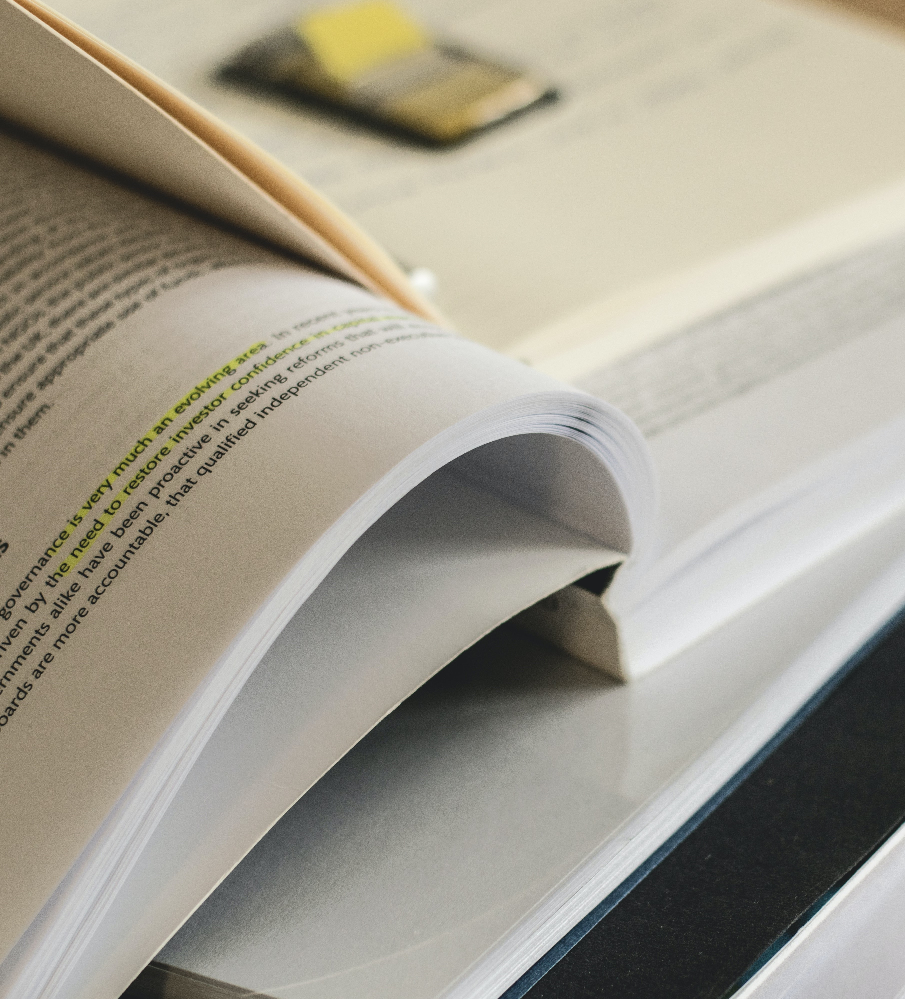

Допоможемо розкрити потенціал дитини
А також адаптувати до мікро та макросоціуму
Допомога психолога потрібна якщо ви прагнете
Провести корекцію емоційно - поведінкових особливостей.
Розвинути у дитини її потенціал, розширити емоційно-вольову та когнітивну сфери.
Підготувати та змотивувати до навчальної діяльності.
Сформувати готовність до життєвих складнощів та задач.
Стимулювати такі риси характеру як самоорганізованість,
відповідальність та зацікавленість у нових знаннях.
Перелік ознак, що свідчать про необхідність
допомоги спеціаліста
Вікові кризи
Під час вікових криз дитина може і повинна проявляти протест. У 3, 7 і 12
років цілком нормальні
істерики, безпричинні образи, замкнутість. Дитині потрібна допомога в
адаптації та розумінні своїх емоцій. Якщо ж в ці періоди дитина не
виявляє подібних
емоцій - це може бути приводом звернутися до психолога. Дитина ймовірно
пригнічує їх і тримає в собі.
Проблеми у спілкуванні
У багатьох дітей є проблеми з комунікацією. Їх потрібно налагодити в
дитячому віці, щоб в
подальшому малюк не став соціально замкнутим і невпевеним у собі. До
психолога потрібно
звертатися, якщо дитина
відмовляється ходити до школи. Якщо дитині некомфортно в колективі, її
ображають, з нею не
хочуть дружити, вона може замкнутися в собі. Якщо ви чуєте від дитини фрази
на кшталт «У мене
немає друзів», «Зі мною не хочуть дружити», «Ненавиджу всіх», це тривожний
дзвіночок. Також
важливо не упустити момент, коли дитина перестає спілкуватися з батьками.
Якщо малюк різко
віддалився, перестав ділитися з вами своїми переживаннями, це привід для занепокоєння.
Агресія
Якщо дитина постійно виявляє агресію по відношенню до оточуючих, конфліктує
з дітьми і
дорослими, грубо спілкується з батьками і вчителями, це привід звернутися до
психолога. Така поведінка дитини може свідчити про
внутрішній конфлікт
або дискомфорт.
Шок
Обов'язково слід звернутися до психолога, якщо малюк пережив шок,
насильство, смерть близької
людини або будь-яку іншу важку життєву ситуацію. Навіть бійка, що сталася на
очах дитини, може
спричинити замкнутість у собі. Всі дитячі страхи потрібно
опрацьовувати.
Смуток, тривога
Час від часу діти плачуть, засмучуються через оцінки в школі або сварки з
друзями. У всіх бувають невдалі дні, але зовсім інша справа, коли такий
настрій супроводжує дитину тривалий період часу.Звернутися до психолога
потрібно, якщо поганий настрій заважає дитині виконувати рутинні справи,
займатися навчанням, спілкуватися з друзями. Якщо у малюка почалися проблеми
зі сном, пропав апетит, якщо йому докучають головні болі та болі в животі, але
лікарі кажуть, що він здоровий. Це психосоматичні розлади тобто
неопрацьовані, пригнічені негативні емоції та почуття.
Про себе

Машовець Марія
Закінчила Національний педагогічній Університет ім.
М.П.Драгоманова.
За спеціалізацією спеціально клінічний психолог, рівень 'Магістр'.
Працюю у школі 4 роки у тому числі з дітьми які мають особливі освітні
потреби.
Тому маю різноплановий досвід спілкування і роботи з дітьми.
Послуги

Індивідуальна консультація
Психологічне консультування в
індивідуальному форматі дозволяє виявити проблему і ефективно працювати з нею.
300 uah
Психодіагностика та профконсультація
Проведення тестування виявлення особистісних
якостей, професійної спрямованості.
360 uah

Психологічна корекція.
Формування необхідних психологічних якостей,
підвищення соціалізації та адаптації до життєвих умов.
400 uah
- Елена
- Ernest Hemingway
- Анна